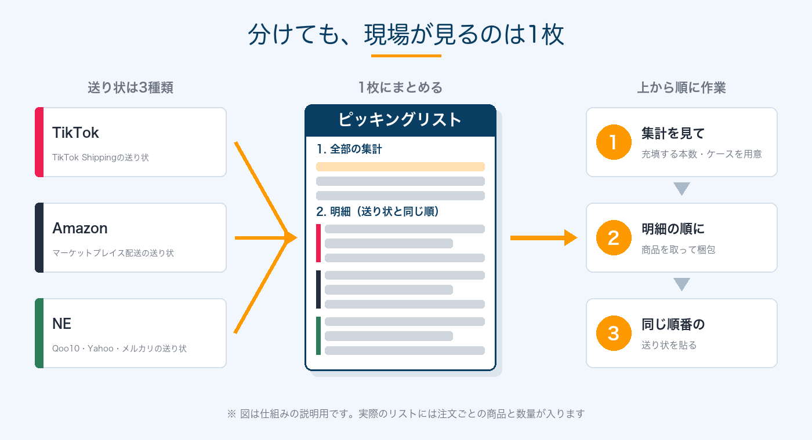

📦
最初から安くしようとしない
―― 出荷の工程を変えた理由と、任せた理由 ――
この記事は、いつも一緒に働いてくれているスタッフに向けて書いています。10月から、Collegrance（香水の小分け販売）の出荷の工程を変えました。やり方が変わると、現場は「なんで？」と思うはずです。その理由を、ちゃんと言葉にして残しておきたかったんです。
人が足りない時に、TikTokが伸びた
TikTok Shopの注文が伸びてきたのは、スタッフが1人辞めて、育休中のスタッフが戻ってくる直前のことでした。充填と梱包をスタッフ1人が、残りの梱包と出荷を私がやっていました。正直、かなりギリギリの状態でした。
そんな中で一番怖かったのは、時間が足りないことより、ミスです。違う商品を送ってしまうのが、一番怖い。
安くするより、まとめる
Collegranceは最初から、全部の販売先の注文をネクストエンジン（NE：複数のお店の注文と在庫を一か所で管理するサービス）にまとめて、ネコポスで出してきました。TikTokの注文も、Amazonのケース付きの注文も、全部NEです。
人が戻ってくるまでのこの時期は、送り状を出すのも在庫の管理も、一か所でまとめてやりたかった。やり方が販売先の数だけあったら、覚えることも間違える場所もその分増えます。あの人数で、それは無理やった。
NEは注文の件数に応じて費用がかかります。正直、安くはないです。笑 それでも、まずは簡単にまとめるところから始める。安くするのは、その後でいい。これは今でも大事やと思ってます。
慣れたから、分けた
まとめて出しているうちに、在庫の管理にも慣れて、発送は毎日のルーティンになりました。売上も伸びて落ち着いてきて、気づけば1日150件の発送が当たり前になっていました。
件数が増えると、NEの請求も一緒に増えていきます。8月は5,493件で、ネコポスの送料220円に、NEの費用が1件あたり約27円乗っている計算でした。一方で、TikTokとAmazonにはそれぞれ自前の配送サービスがあって、NEを通さずに送り状を出せます。
| 出し方（1件あたり・税込） | 送料 | NEの費用 | 合計 |
|---|---|---|---|
| これまで（NEにまとめてヤマトのネコポス） | 220円 | 約27円 | 約247円 |
| TikTok Shipping | 209円 | なし | 209円 |
| Amazonのマーケットプレイス配送 | 185円 | なし | 185円 |
NEの約27円は、8月の請求額を件数で割った数字です（送り状を出すための連携アプリの月額も含む）。
1件あたりにすると数十円の差です。でも月6,000件が見えてくると、ここはもう無視できへん金額です。そこで10月から、TikTokとAmazonの注文をNEから外しました。Qoo10・Yahoo・メルカリは、これまで通りNEで出しています。
大事なのは、最初からこれをやらなかったことやと思ってます。人が足りない時期に3つのやり方を同時に覚えようとしていたら、たぶんミスが増えていました。量があって、ルーティンが固まって、人も揃ってきたから、分けても崩れなかったんです。
分けても、見るものは1つ
販売先を分けると、送り状も3種類になります。そのままやと、どの送り状がどの注文か、現場で迷ってしまいます。
そこで、3つの販売先の注文を1枚のピッキングリストにまとめて、送り状と同じ順番に並べる形に作り直しました。分けたのに、現場で見るものは1つ。結局ここでも「まとめる」をやってるんですね。笑

この作成手順は、Claude Code（AIに指示してプログラムを書いてもらう道具）を勉強中のスタッフに考えてもらいました。
Claude Codeは、ただのチャットではありません。作業するフォルダを選んで、やりたいことを明確に伝えれば、かなり正確に応えてくれます。逆に、伝え方があいまいやと思った通りには動きません。それに、どのパソコンで動かすか（手元のパソコンか、離れた場所から操作するか、会社に置いてあるMac miniか）もちゃんと選ぶ必要があります。そこを理解してもらう題材として、かなり良かったと思ってます。
任せる理由
任せられる形にしておくことが、会社として大事やと思ってます。
普段は、みんなが互いのやり方を分かっていて回せる状態にしておく。緊急の時は、私が巻き取れる。どちらかだけではなくて、両方ある状態を作りたいんです。
ピッキングリストを1枚にまとめたのも、そのためです。手順が1枚に収まっていれば、誰が出荷に入っても同じように回せるし、私が入る時も迷わずに済みます。
最後に
工程が変わるたびに、現場は覚え直しになります。申し訳ないなと思いつつ、変えた理由はここに全部書きました。やってみて「ここ分かりにくい」「前のほうが良かった」と思ったら、遠慮なく言ってください。それが次の工程を良くしてくれるので。
ヤシノミの考え方を、もっと読む
あわせて読みたい
いま、どこで詰まっているか
当てはまるものをタップするだけ、約1分。入力も登録も要りません。詰まっている場所が分かったら、その直し方を「診断書」にしてLINEでお送りします。
記事の更新通知だけ受け取りたい方は、LINEで新着記事を受け取る。月に数本、相談の義務はありません。